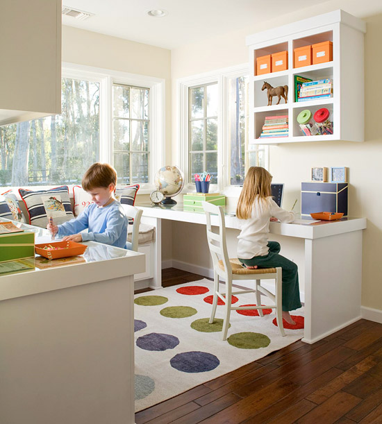
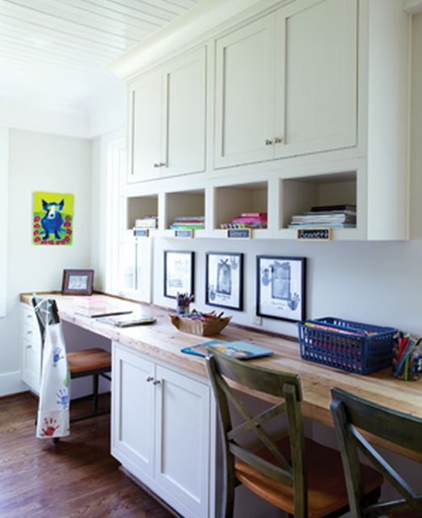

.png)
.PNG)
.PNG)
.PNG)
.PNG)
.PNG)
.JPG)
.JPG)
.PNG)
.PNG)


bhg.com
The beadboard ceiling and  wall treatment add so much texture and detail in the next one.  Be sure you also note how the cubbies are labelled – small chalkboards!
birminghamhomeandgarden.com
A good homework place should have great lighting. Each desk below has its own light, and there are sconces by the window seat (not to mention all the wonderful natural light pouring in from the window there.)

And a homework space should have plenty of storage.  (You know I couldn’t resist that map with the gingham continents! 🙂 )
Even the youngest of children can appreciate a table and chair for their work.
There is a lot to love in this one…the bright colors, the bookshelves with contrasting back, Â and that cute striped rug.
The next one can easily accomodate three people. Don’t you like the bookshelves built in there and those glass doors?
Storage baskets help to keep things organized.
How about a closet turned into a homework space?
All the homework supplies – from crayons to markers to scissors – are smartly stored in cans at the clever desk below.
The lamp in the next one is beautiful! Wish I could find one like that for myself. 🙂
I like the idea of the homework area being separate from but close by the kitchen like in the one shown here.
Now let’s take a look at a few commericial ones.
I loved this bedroom with its soothing neutral color scheme.
If our children had been seated side by side when doing their homework, it would have never gotten finished. Â It would have been too easy to just talk, play, and generally be distracted by the other siblings. Â So this separated work station unit would have certainly helped.
Without some kind of separation, I am sure our house would have been like this!
Do you have a favorite from all of these cute and clever spaces? (Mine was the one with the tan plaid and the black and white photography. 🙂 )
I’ll have more back to school eye candy for you soon.
Hope you are having a great week!


.PNG)
Hands down … The painted child’s table and two sweet chairs with the cute little red cushions tied on with ribbon is my favorite!!! I liked it so much that I had my husband paint our granddaughter’s table and chairs white and then distress it a little. I am going to make red gingham cushions with ribbon ties for the chairs! Thanks for the inspiration .
———————————————————————-
Katrina that sounds precious! And you know I love anything with red gingham! Love it. 🙂
Kelly
Kelly,
I really like these homework stations. The first one is my favorite and I think it might be in your daughters room? My second favorite is the separated stations by toulmincabinetry.com. It would work nicely in any home and could even transition for work/office space for grown kids or adults. The mix of cabinetry, hard woods and counter tops is what draws me in.
———————————————————————–
Yes, the first one IS our daughter’s desk area. So thank you Dawn! I agree with you that the cabinetry one would be great for grown kids or adults. I would certainly use it!
Kelly
Ok, I have to say my favorites in your post are first the cute closet work station. I have seen that picture before. How convenient and cool is it that you would only have to just close the doors to hide the messy desk. My second is the tan plaid that you favor as well. I think though, it is a bit bland. How about a pop of color to spice it up? Maybe like our favorite red or green?? Well, I have to say, though we have desks in the kids bedrooms, I have too often caught them with their computers on their laps sitting on their beds. How’s that for a comfortable work station! 🙂 Something about lap tops, I am sitting in my chair by the French door right now. Eek! Oh, work stations…. P. S. I really love your little kitchen work station, chalkboard and all! 🙂
Debra
——————————————————————–
Thank you Debra. I do think some red with all those neutrals would be great. I am glad you like our kitchen desk. It is really best suited to a laptop because it is so very small.
Kelly
I like your top image the best, with the lamp inside the cabinet. Very quiet and cozy space to work- reminds me a little of a library study carrel. The jar of drinks probably also helps keep a student motivated! My daughter has a desk in her room, but ends up doing homework wherever the spirit moves her- the noisier the spot, the better. Go figure.
———————————————————————–
I had never thought about our daughter’s desk being like a study carrel, but you are right. Your daughter’s study habits sound a lot like my husband’s. In college, I would go study in the quiet library, while he would go study in the very noisy student center. To each his own!
Kelly
I’ve commented before that currently my daughter and SIL are between churches, and living close to my home – where my daughter homeschools the FIVE children…yes five. Needless to say I covet (sorry) any these spaces that could be used by the grands. One of my upstairs bedrooms is the school room and to say it is a bit of a mess would be laughable. There is a desk in the room which the oldest uses, with the others at a card table and a child’s table. Though they are beautiful to look at, I scratch my head at all the “white” furniture in these pics because my experience is that ALL my grands will write on a surface in a New York minute (particularly the 3 year old). The commercial setup would be the only reasonable one in my situation. Yes as a child we did homework at the kitchen table, but as a teen I progressed to a small desk in my bedroom which I loved – because I could shut the door to my three rowdy brothers. ~grins~
————————————————————————-
If you had 3 rowdy brothers, you probably had to LOCK your door as well, Becky!
Kelly
I also noticed all the red! We also did homework at the kitchen table. When they got older, they did homework in their rooms. One thing did stay consistent, though. Homework was done as soon as they got home from school. They started this habit themselves when the twins were in second grade. Whew ‘Cause it never would have happened had I set that rule.
I think my favorite was the second one. I love the twister floor! Back to back keeps their eyes off of each other and their attention a little more focused.
———————————————————————–
Of course there is red! What else would I be attracted to? LOL It sounds like your children have great study habits.
Kelly
Kelly,
I would love more than one of these spaces for myself! Both of our sons had desks in their rooms and actually used them most of the time. They never looked as orderly as these unless mom tidied up for visitors. 🙂
The little white desk with the monogrammed lamp shade is particularly charming. Oh, and my desk, which I rarely use, is in a converted closet in our study. Mr. B. uses the built-in desk along the wall opposite the closet desk set up.
Your daughters desk (the image on top was your daughters, wasn’t it?) is so pretty and I love the bulletin board.
Fun images.
Karen
——————————————————————
Karen, I am with you in wanting one of these for myself. Thank you for the compliments on our daughters’homework area.
Kelly
I enjoyed looking at all the study areas but to be honest I truly like your daughter’s the best! My kids had desk areas but always liked the dining table to do their HW. I remember I got a metal desk and chair as a child and I loved it AND used it! Later I received a portable typewriter and it was the best thing ever. We lived in a really small place so I was delighted to have my own special area to really study. I am so amazed how far technology has brought us! How did we ever make it without computers!!? My greatest wish was to have a set of World Books–my parents couldn’t afford them– so my very first job -that was the first thing I bought my children– just donated them to the after school ” Gramma’s House” at church. It really pulled my heart strings to part with them– even though I allowed my granddaughter to cut out pictures and maps for reports. Oh how I loved those books! Remember Child Craft? Sweet memories for book lovers!
———————————————————————
Gosh, thank you Louvina. I don’t know how in the world me made it before computer, and yes, I do remember Child Craft!
Kelly
I love all those homework spaces but it did bring to mind my own homework space in our small country house! It was on the sofa and as I worked on my homework i had one eye out for Gilligan’s Island as it played on the tv! My mom could never understand how I could do homework and watch tv at the same time but it worked for me.lol…
——————————————————————-
I believe Gilligan accompanied a lot my my homework too!
Kelly
I like the room with the Tomy clock. (Isn’t that what they are called?) But I love the chairs/stools in the Restoration Hardware ad. I like a little of that industrial look. Will you tell Martha (comment above) that we are forgiven for those “PMS Mommy moments”. I had a similar one with spilled glitter that my kids still talk about. I miss the time when my children were young but I don’t miss homework time.
——————————————————————-
There are Tomy clocks, but I believe these are Judy clocks. I think all the Tomy ones that I have seen look like owls. 🙂 Spilled glitter? Ohhhh…that would be one big mess! Our custodians hate when we use glitter because it gets e v e r y w h e r e. And yes, homework time IS a chore.
Kelly
These are all great. I like them, but wonder how many get used. Like you, I did my homework at the kitchen table and so did my children. The nice study areas we created in their rooms were rarely used to study. My middle child had the best desk, it was a built in 6 feet long, with lots of storage and book shelves that he kept a huge mess all the time. When he was about 13 and had ignored repeated warnings to clean it I had a “Mommy Dearest” moment and shoved it all on the floor. That was 25 years ago and my kids still talk about it. I was not a neat freak, but enough is enough…….
Anyway, sorry to inject a bit of realism in an otherwise lovely post about beautiful study areas.We can all dream…have a great day!
——————————————————————–
Sometimes it takes drastic to measures to get someone’s attention…especially the attention of a 13 year old boy!(unless, of course you are a 13 year old girl. 🙂 )
Kelly